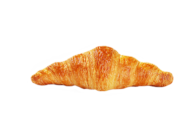
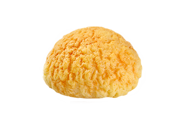
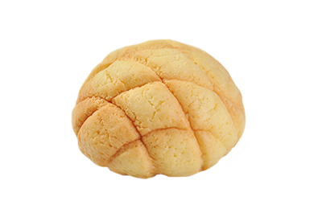
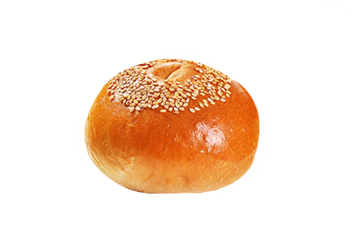
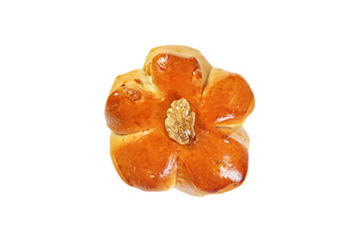
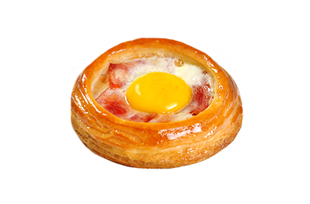

产品优势 ——
产品优势：
原料优势：产品原料70%以上源自进口，拥有长期稳定的采购渠道
设备优势：进口大型流水线，全程PLC管理，保证产品的稳定化量产
管理优势：原料，生产，出货全程按照日本标准管控
研发优势：日本负责提供产品研发支持
从原材料到出厂成品，严格把控每一个安全细节；从设备到研发，以稳定专业的技术提供更优化的产品服务；以细致追求卓越，以卓越寻求合作，将我们的美味奉献给每一位热爱生活的人。
-

发酵黄油牛角生面团
Butter Croissant
采用优质进口小麦粉和法国顶级AOP黄油，引进荷兰先进设备，均匀折叠24层，外皮酥脆，内部柔韧，奶香醇厚
READ MORE -
迷你牛角包生面团
Mini croissant dough
采用泰国进口高筋粉和优质进口黄油，使用荷兰先进设备，24层折层，外表酥脆，内里松软，是早餐菜单中咖啡的好伴侣。
READ MORE -

C迷你菠萝包生面团
Mini Pineapple Bag
精选进口面粉配纯天然新西兰进口黄油，甜脆油皮包裹松软面包，体积小巧，巧克力口味在原味基础上满足巧克力爱好者的口感
READ MORE -

C菠萝包生面团
Pineapple Bun
优选新西兰进口黄油，外皮酥脆，内里柔软，香甜可口，满足您的味蕾
READ MORE -

奶油面包生面团
Bread And Butter
精选优质小麦粉和黄油，包裹秘制蛋糊，烤制后外皮柔软，内馅香甜，十分可口
READ MORE -

C肉桂苹果派生面团
Cinnamon Apple Pie
精选进口小麦粉和优质黄油，使用荷兰设备126层折层，包裹独家配方熬制肉桂浓郁苹果果粒，外皮酥脆，馅料松软，口有余香
READ MORE -

C红豆面包生面团
Red bean bread dough
精选优质小麦粉和黄油，包裹大粒红豆馅料，烤制后外皮柔软，内馅香甜，十分可口
READ MORE -

C核桃面包生面团
Walnut Bread
采用优质进口小麦粉和法国顶级AOP黄油，引进荷兰先进设备，均匀折叠24层，外皮酥脆，内部柔韧，奶香醇厚
READ MORE -

C丹麦酥皮四角生面团
Danish Pastry
采用优质进口小麦粉和比利时的进口黄油，经过20层均匀折叠，层次分明，口感酥脆，可随意搭配食材。
READ MORE -

C丹麦酥皮长条生面团
Danish pastry
采用优质进口小麦粉和比利时的进口黄油，经过20层均匀折叠，层次分明，口感酥脆，可随意搭配食材
READ MORE -
洋梨派生面团
Cream Board
精选小麦粉配合新西兰进口黄油，佐以锡兰红茶配置秘制馅料，松软甜嫩
READ MORE -

林檎派生面团
Cream Board
精选面粉均匀折入126层天然黄油折层，点缀肉桂苹果片，香酥甜嫩，口口生香
READ MORE